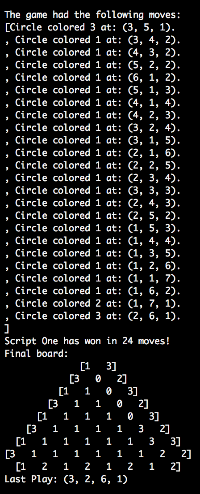

Problem Definition
In this assignment, we implemented a strategy to play this game intelligently.
- Design a static evaluator,
- Select an adversarial search algorithm (alpha-beta search),
- Implement this algorithm and apply it to the Atropos game,
- Package our code so that the executable can participate in an automatic tournament.
Method and Implementation
- ReadBoard()
This function takes the input string and return board in 2-d integer array and last movement.
- PossibleMoves()
This function checks all six adjacent circle colors of last movement and return a list containing next possible movement options.
If last movement is null, it checks all the board and find all uncolored circle and generate a list of available movements with possible colors.
- neighbor()
This function checks all six adjacent circle colors of a certain movement and return its colors
- isLoss()
The function checks its movement color and two adjacent circle colors positioning in triangle. If their colors are the set of different colors, this return True. Otherwise, False.
- evaluator()
This function scores on a movement.
-If the movement make the game over, then score = -1000
-Check boundary colors:
-Botton boundary is not green -> +2
-Bottom left cornoer is not blue -> +2
-Left boundary is not blue -> +2
-Right boundary is not red -> +2
-Adjacent circle is colored -> +3
-Same colored neighbors with move itself -> +5
-Different colored neighbor pairs -> +2
- minimax()
This function implements the Minimax method with alpha-beta pruning. It searches next movement and if certain conditions were met, it will stop and return the next best movement.
Experiments
- We experimented many times chaning the value of score in evaluator function and depth for minimax function to find ideal resutls
Results
- We tested 10 times againt random player and we got 6 wins and 4 loses.
| Default Win |
|
 |
|
|
- We tested 10 times againt ourself and we got 6 wins and 4 loses.
| Script One Win |
 |
|
 |
|
|
|
Discussion
- During the experiments, our program ran without breaks.
- We implemented minimax with alpha-beta pruning. It saved much time to run the code because it did not need to evaluate all the movements but few selected movements by certain conditions.
- There must be more methods to make the program more intelligent. we want to learn how we can improve our evaluator function.
Conclusions
- It was not easy to figure out the way implement the minimax algorithm with alpha-beta pruning technique. This assignment challenges our understanding of the algorithm and coding skill. However, I enjoyed alot doing this assignment. It was quite fun to discuss and think about strategy with my partner.
Credits and Bibliography
http://www.cs.bu.edu/faculty/betke/cs440/restricted/labs/CS440_lab10.pdf